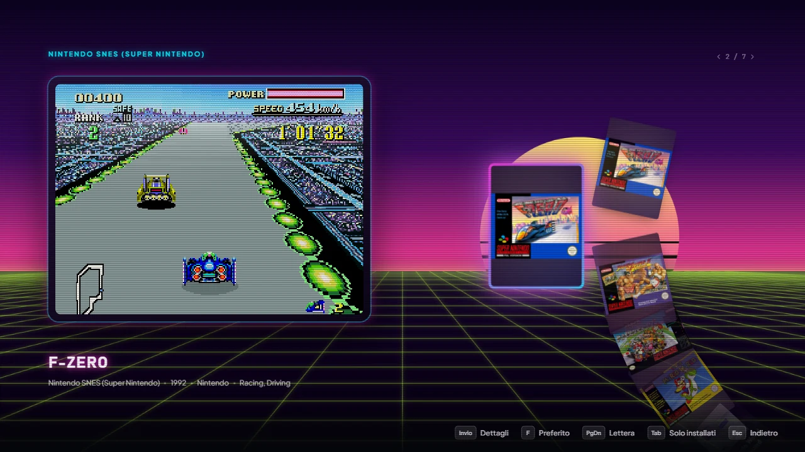

Cos’è un tema
Un tema è una cartella: un theme.json che dice cosa cambia e, se vuoi, CSS, immagini, caratteri, suoni e pagine con script. L’app continua a fare il lavoro (il joypad, i giochi, installare, giocare); il tema decide come appare e come suona.
Colori, caratteri, angoli, sfondo, un’immagine per sistema, suoni, musica, le parole dell’app, opzioni per l’utente. Niente codice: lo scrive l’editor per te.
Ogni schermata fatta degli elementi che metti dove vuoi: liste di giochi come file, griglie o ruote, immagini, video, testi, pulsanti. Layout tra cui l’utente sceglie, e ogni sistema coi suoi colori e le sue parole.
Qualsiasi CSS, su ogni elemento delle tue scene e su parti dai nomi stabili. Ogni voce di una lista sa quanto dista dal focus.
Pagine HTML con JavaScript: effetti disegnati sotto o sopra le schermate, e pagine messe in una scena. Girano in una sandbox e parlano con l’app tramite rp.
Ogni livello è facoltativo. Un tema che dice solo "colors": { "accent": "#ff2bd6" } è un tema; tutto ciò che non dice resta come lo disegna l’app.


Da sapere
- I tuoi temi stanno nella cartella dati dell’app, in
themes: Impostazioni → Aspetto → Cartella dei temi la apre. - Gli esempi vengono con l’app e non si modificano: Duplica quello che vuoi per farlo tuo.
- Salvi un file e la Desktop Mode cambia subito, senza chiuderla.